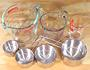
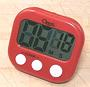
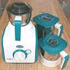
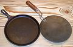

General & Western Cuisines
World Cuisines
Serving Pieceshave their own page.Kitchen EssentialsKnives&Sharpening KnivesTypes and how to select them -&- how to keep them cutting. Stovetop CookwarePots & Pans: which are most useful and what materials are best for each. Mixing BowlsAn absolute necessity in any kitchen. Mortar & Pestle&Grinding StonesSometimes these do a better job than machinery, and are easier to clean. ScaleA "must have" kitchen item, and not expensive. Measures by weight are far more accurate than other measures (except for liquids).  Measuring Cups & SpoonsMeasures are essential if you are following recipes, or want to be consistent in your own recipes. Vegetable Peelersfar superior to a paring knife for peeling vegetables. Graters & SlicersBox graters, microplanes, mandolins, etc. manual or machine operated, are necessary items in an efficient kitchen. Gravy SeparatorEssential! - even if you never, ever make gravy. It can de-fat a pot of soup stock in minutes, even hot, and without loosing any soup. Other tasks too. Citrus JuicerThis is a tool no kitchen can do without. There are many forms and prices, but this is my preference for general kitchen use, it does Oranges, Lemons and Limes. Garlic PressA great time saver when many garlic cloves are needed, or they must be chopped very fine. Spice GrinderYou need this. It will grind whole spices, dried chilis, dried herbs, etc. in a matter of seconds - but not wet or oily ones. Don't use it for grinding your coffee too - unless you like spice flavored coffee. ThermometersInfrared, Instant, Conventional, of all kinds, sizes, and costs. It's silly to try to cook without accurate temperature control.  Kitchen Torch
Kitchen Torch
Saves endless hours of frustration, especially in skinning bell peppers and the like. SkimmersEssential for skimming soups, broths, etc. or for very fine straining jobs. Spider SkimmerThe very best scoop for deep fry, it holds little oil. 
Slotted SpoonsSlotted Spoons are poorly designed for any use. Here we present something a lot better and more versatile. Mesh StrainersSeveral sizes of strainers should be in every kitchen. Piping BagEssential even if you never decorate anything. Makes stuffed eggs and other difficult jobs easy. Rolling PinsFor pasta, dumplings, pie crusts, etc. The top one is almost useless in my opinion. Baking Sheet & RackEssentials for baking or oven roasting. Egg ToolsNear essentials for working with eggs. Piercers, slicers, spoons, etc. Nice to HaveBag SealerEssential to my kitchen. Because I'm the only person in my household, I have a lot of left-overs, which are bagged and fridged. Steamer Pan, SteamersAllows many foods to be cooked without oil and with little attention. Salad SpinnersFor time saving and quality - not just for salads, but improves storage time for leafy greens by removing free water before bagging and storing. 
Roasting PansBoth open V-rack and covered roasting pans have specific uses. Pressure CookerConsidered essential in bean oriented Brazil and India. Largely displaced by the Microwave in North America, and now by the Multicooker. ColanderConvenient for draining, if other means are not conveniently at hand. Meat / Food GrinderUseful for grinding other foods, as well as meats. Many models, powered, mixer attachments, and hand cranked are available. French Army KnifeEspecially good for field trips and parties. French PressFor the best Coffee and Tea. Potato ToolsHelpful for dealing with potatoes and other root vegetables. . Food MillVery popular in France, not so much in North America. . Double Boiler / Bain Marie- These devices may be essential, or of little use, depending on your cooking interests. Japanese Grill Pan.Great for grilling small items like garlic cloves.  Kitchen TimersThese can be critical in a busy kitchen, especially when some processes take a long time unattended. Special Purpose ToolsDehydratorNot for every kitchen, but essential for some. Grain MillUnneeded for most kitchens, essential for some. Sprouting JarFor health conscious cooking - and South Asian cuisines. Fish Poacher / SteamerDesigned to poach or steam whole fish. Pasta ToolsTools useful when making fresh pasta. Pasta MachineAssistance for rolling out and cutting fresh pasta. Sieve SetUseful where ingredients are pounded to specific size. Sausage StufferA pressure Sausage Stuffer is recommended over using a meat grinder with stuffing adapter, as the grinder's screw feed is slow and will heat the meat too much. Kitchen AppliancesMini-Prep® ProcessorSmall, easy to deploy, easy to store, relatively inexpensive. I have used this perhaps 30 times more often than the big processor. Food ProcessorA large, multi-purpose cutting and mixing machine. Very useful for larger jobs. Popular worldwide for making traditional dishes possible with far less labor - essential as traditional all day kitchen help becomes unaffordable. Immersion Blender / Hand BlenderFor blending and puréeing in the pan. Very useful for Sambars and similar. 
BlenderBasically, a Smoothie making machine - sub-optimal for most other uses. Mine has been totally replaced by a Mixie, a far more versatile machine, which can make smoothies too.  MixieIndian Mixer Grinder, very popular in South Asia. This unit gets far more use in my household than any other electrical appliance, except the Coffee Grinder. Too violent for delicate chopping jobs, though. Stand MixerStand mixers are particularly important in kitchens that do a lot of baking, pancake making and similar tasks. There are many models on the market, in many power ranges, and at many prices. Lefse Griddle / Mitad16 inch diameter, for flatbreads including Injera, regular griddle uses too. Electric Grill / GriddleThe unit pictured actually works. Many just can't get up enough heat to do the job. Rice CookerActually, an absolute essential in some countries, many households in other countries, and for parties. Multi-CookerHigh Tech electric programmable cooker with functions of several other cooking appliances. These are becoming very popular in North America. Some have pressure cooker ability, and some don't. Features and price vary widely. Microwave OvenNot a real oven, but cooks many foods very fast, and is now in most North American households. South Asian CuisinesKadhai / KarahiThe primary cooking pan in India. It looks like a Wok, but its geometry is significantly different, for reason.  Tava / Griddle PanThe slightly concave Tava is traditional in India, but I strongly recommend the Lodge Griddle Pan. Sauté PanIn India pans much like our sauté pans are used, but they generally don't have handles or lids. Clay PotsClay pots are very common in southen India, in many shapes and sizes. PakkadPopular in India for manipulating cooking eqipment that doesn't have handles. Chakli Press / Sev SanchaAn extruder for noodles and deep fried items. Essential in South India and Sri Lanka. Idli SteamerA household essential in South India and Sri Lanka for making popular rice cakes. Puttu / Pittu MakerImportant in southern India and Sri Lanka for special steamed cakes. MixieIndian Mixer Grinder, very important in South Asia, saving endless hours of hand labor. Highly recommended, but too violent for delicate chopping jobs - a knife or a food processor is better for those. Wet Grindera household appliance in India, used by families that require higher production of or a finer grind of grains than the Mixie can handle. Chinese CuisinesWok SetPretty much essential for any approach to Chinese cuisines. SteamersChinese cuisines makes frequent use of multi-level steamers. Sand PotsPots made from a special clay, partially glazed, and with a sandy texture on the outside. Korean CuisineKorean Grill PlateEssential for the famous Korean BBQ. Japanese CuisineRice CookerFound in every household, used 24 hours a day (some don't even have an off switch). Wok SetJapanese woks are a little different, but for us, the Chinese form will do fine. Donabe - Clay Pot).The traditional pot for cooking and serving hot-pot dishes in Japan. Japanese Grill Pan (Fish Grill).A small stovetop grill, not just for fish. Tofu PressIn Japan, tofu is almost always pressed to remove some of the packing water. This makes it firmer and more able to absorb flavors from other ingredients. Pickle PressIn Japanese households, many impromptu pickles are made from various vegetables. This press makes it easy. Sudaré - Sushi Rolling MatEssential for making Sushi Rolls. Men Koshi / Miso KoshiThese special strainers are very important for Noodles and Soups, including Ramen Soups. Suribachi & SurikogiA mortar and pestle designed for grinding miso and other fairly soft items. Otoshi-butaA drop lid to keep solids under liquid during cooking. Formerly wood disks, which are still available. Japanese Graters / SlicersSeveral types of graters and slicers are used in Japan that are different from those we are familiar with in North America. Southeast Asian CuisinesWok SetPretty much as essential as for Chinese cuisines. Vietnamese Clay StoveThe kind of stove woks were made for. Sticky Rice Steamer, Lao / IssanLong Grain Thai Sweet Rice is cooked differently from other rice. Mortars & PestlesMortars and Pestles are important tools in Southeast Asia |